地政学
青島は黄海と渤海湾の外縁を見渡す港湾都市です。山東半島の先端に近く、日本、朝鮮半島、華北を結ぶ海上交通の要所で、軍港、商港、観光港の役割が重なり、沿海防衛と国際物流の緊張も街にはっきりと見えます。

🇨🇳 中国 / アジア / World City Atlas
黄海に面した港湾、ドイツ租借地の記憶、ビール文化、海洋研究、製造業、海水浴場が重なる山東半島の都市です。港と坂の街路から中国沿海部の歴史と生活を読みます。
都市の骨格
青島は黄海へ突き出す山東半島の南岸にあり、湾、丘、旧租借地、深水港、海水浴場が近距離に重なります。赤い屋根の旧市街と巨大な港湾施設が、観光都市と産業都市の両面を見せます。
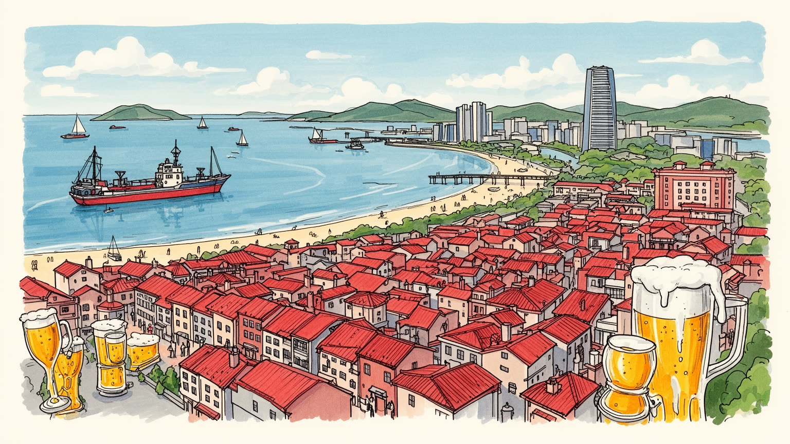
青島は黄海と渤海湾の外縁を見渡す港湾都市です。山東半島の先端に近く、日本、朝鮮半島、華北を結ぶ海上交通の要所で、軍港、商港、観光港の役割が重なり、沿海防衛と国際物流の緊張も街にはっきりと見えます。
港湾物流、家電、ビール、造船、化学、海洋研究、観光が雇用を作ります。岸壁、工場、研究所、ホテル、飲食店、配送の仕事が近く、専門技術者と現場労働者が同じ都市の成長を支えています。生活費も重い論点です。
ドイツ租借地の教会や赤い屋根、山東の市場、海辺の祭礼、道教の崂山、ビール文化が混ざります。海鮮料理、家族の散歩、学校、大学、サッカー観戦、海辺の音楽が日常文化を厚くしています。祈りも街に残ります。
海水浴場、桟橋、旧市街、ビール街、崂山は訪問者を集めます。一方で住民には家賃、坂道、港湾車両、季節観光の混雑、冬の風、霧の日の交通、古い住宅の更新が身近です。買い物や市場も毎日の大切な街の日常です。
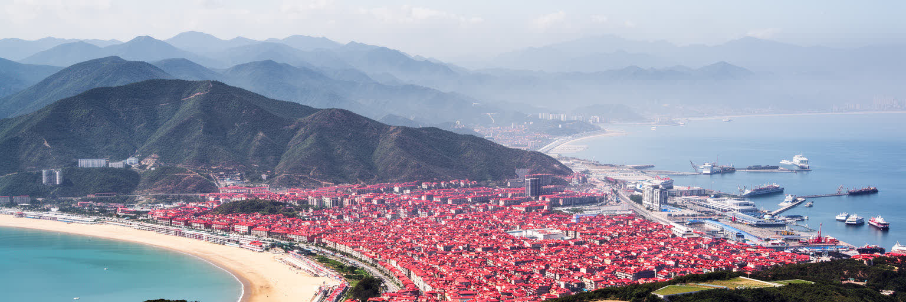
青島の地形は、海岸線、湾、丘陵、岬、旧市街の坂道でできています。山東半島の南岸に置かれた都市は、内陸の平野都市とは違い、海へ向かう視線と斜面の生活を持ちます。膠州湾の奥には港湾と工業地帯が広がり、外海側には海水浴場、遊歩道、旧租借地の街路が連なります。中心部では赤い屋根の低層建物、石畳の坂、教会の尖塔、木陰の道が海へ下り、近くに高層住宅やオフィス、ショッピングモールも立ちます。地形の変化は景観だけでなく、交通、排水、住宅価格、観光動線を左右します。海沿いは眺望と観光価値を持ちますが、霧、風、湿気、夏の混雑、高潮への備えも必要になります。丘の上の住宅地は涼しさと眺めを得る一方、高齢者や子どもには移動の負担があります。青島を読むには、湾奥の物流、坂道の通学、海霧の日の運転、斜面地の再開発まで一つの地図に置く必要があります。朝のカモメの声、濡れた石畳、海藻と排気の匂いも地形の記憶です。港と浜辺が近いことが、青島を観光都市でも産業都市でもある複雑な沿海都市にしています。鉄道駅や幹線道路は斜面と湾を避けながら伸びるため、地区ごとの距離感は地図上の直線より複雑になります。海が近い場所ほど観光価値は高い一方、物流や生活道路の混雑も受けやすいです。坂を下りれば観光の海、湾奥へ向かえば生産の海が現れます。この重なりが、青島の街歩きを立体的にしています。
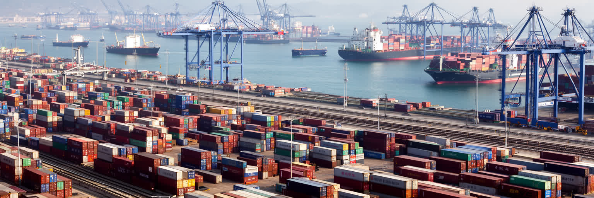
青島港は、山東省の産業を世界市場へ接続する大きな装置です。コンテナ、鉱石、原油、穀物、自動車部品、冷凍食品、化学品が岸壁を通り、鉄道、高速道路、倉庫、保税区、工場へ流れます。港湾は海の玄関であるだけでなく、内陸の工場、農産地、鉱山、消費地を結ぶ結節点でもあります。巨大なクレーンや自動化ターミナルは効率を示しますが、その背後には荷役、整備、通関、警備、運転、検査、冷蔵倉庫、船員支援の労働があります。港の成長は雇用と税収を生む一方、トラック交通、騒音、大気汚染、岸壁の安全、港湾地区と住宅地の距離をめぐる問題も作ります。世界の需要が変われば、青島の倉庫や工場の仕事も変わります。半導体、家電、食品、化学品の供給網は、港の遅延や国際摩擦に影響されやすいです。港湾都市としての青島を理解するには、海辺の景色だけでなく、夜に動くコンテナ、税関の手続き、港湾労働者の通勤、内陸へ伸びる貨物列車を見る必要があります。港は都市の外れにある施設ではなく、都市全体の時間割と雇用を決める基盤です。自動化が進むほど高度な操作や保守の人材が必要になり、従来型の現場仕事は再訓練を迫られます。港が速くなるほど、道路や倉庫、労働者の休息が追いつくかも問われます。輸出入の変化は、食卓の価格や工場の勤務にも跳ね返ります。効率の数字の奥には、交代勤務で海と貨物を見張る人の生活があります。
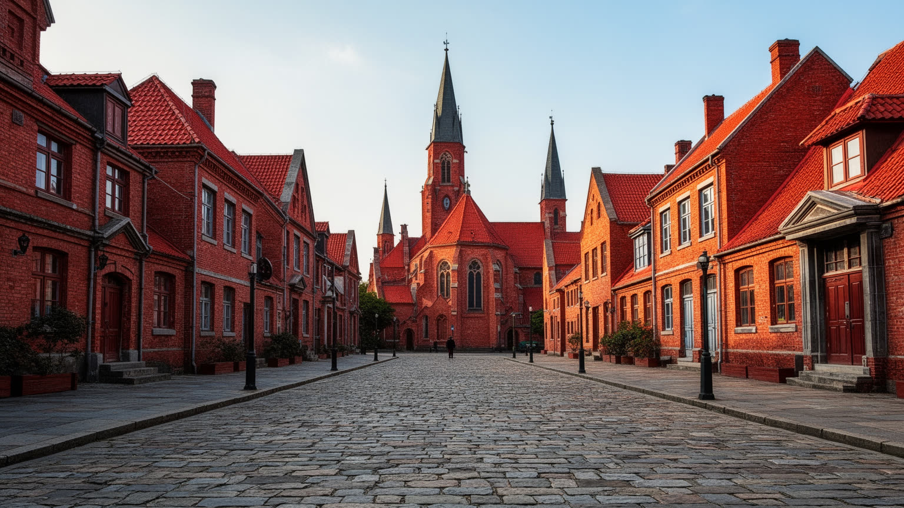
青島の旧市街には、ドイツ租借地時代に整えられた街路、教会、官庁建築、赤い屋根、石造の坂道が残ります。これらは観光写真では魅力的な異国風景として扱われるが、同時に列強が中国沿海部を軍事と貿易の拠点として支配した歴史の痕跡でもあります。建物の保存は、単に美しい街並みを守ることではありません。どの時代の記憶を公共の物語にするのか、植民地支配をどのように説明するのか、住民の生活と観光開発をどう両立させるのかという課題を含みます。旧租借地の通りでは、カフェ、宿泊施設、土産物店が増え、古い住宅は修復と商業化の圧力を受けます。保存が進むほど家賃が上がり、長く住んだ人や小さな店が押し出されることもあります。青島の歴史を読むには、ドイツ風の屋根をロマンチックに眺めるだけでなく、その背後にある軍港、鉄道、ビール工場、行政制度、住民の記憶を重ねて見る必要があります。遺産は過去を飾る装置ではなく、現在の都市が過去とどう向き合うかを示す場所です。学校教育、博物館の展示、観光案内の言葉が浅ければ、建物はただの背景になってしまいます。植民地性を消さず、同時に住民の暮らしを残すことが、旧市街保存の難しさであり価値でもあります。路地で暮らす人の洗濯や買い物が見えるからこそ、歴史地区は生きた都市であり続けます。石造建築の美しさは、歴史の説明責任と切り離せません。
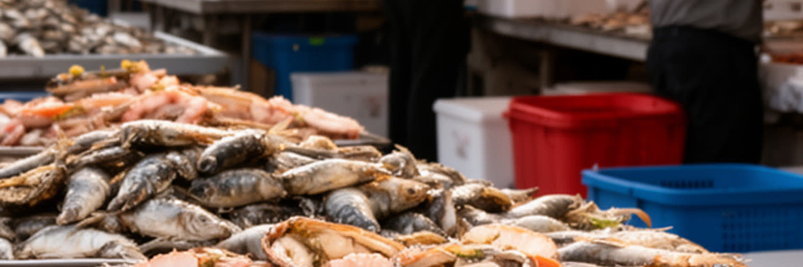
青島を語るとき、ビールと海鮮は欠かせません。ビール工場はドイツ租借地の歴史と結びつき、いまでは都市のブランド、祭り、観光、日常の食卓をつなぐ存在になっています。夏の夜、路地や市場では海鮮、串焼き、餃子、麺、山東料理が並び、袋や容器に入れた生ビールを持ち帰る習慣も知られます。青島国際ビール祭りの時期には、音楽、屋台、地元メディア、短動画の投稿が増え、観光と住民の夜が同じ広場で重なります。食の風景は観光の楽しみであると同時に、漁港、冷蔵物流、卸売市場、飲食店、清掃、規制、季節労働に支えられています。観光客が増えると、店は多言語対応や決済に変わり、人気地区の家賃も上がります。地元の人が日常的に使う市場や小店が、外からの消費に合わせて変わりすぎれば、生活の手触りは薄くなります。海産物の価格は天候、漁獲、流通、観光需要に揺れ、食品安全や衛生管理も重要になります。青島の食文化を読むには、祭りの華やかさだけでなく、朝の市場、港から来る魚、夜の片付け、働く人のまかないを見る必要があります。揚げ物、潮、ビールの麦の匂いは、海辺の食堂と住宅地の小店をつなぎます。名物が有名になるほど、価格の上昇や過度な演出も起こります。観光地の店と住宅地の食堂を比べると、都市の別の顔が見えます。青島らしい食の価値は、旅行者の記憶だけでなく、住民が普段使いできる店が残るかに表れます。
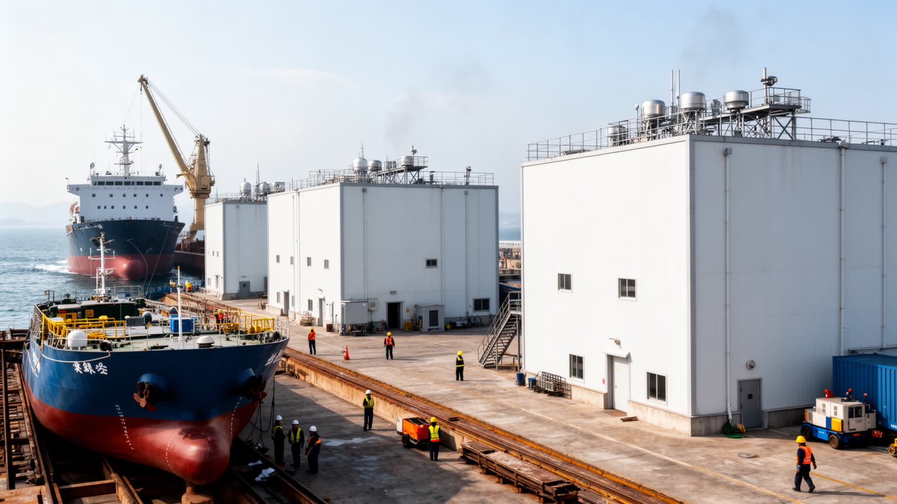
青島は港と観光だけでなく、海洋研究の都市でもあります。海洋大学、研究機関、水産、養殖、海洋観測、環境技術、船舶、海洋装備、気象、沿岸管理が集まり、黄海を単なる景観ではなく研究と産業の現場にしています。海を扱う仕事は、漁業や港湾だけではありません。水温、潮流、赤潮、海洋ごみ、沿岸侵食、台風、漁場管理、海洋資源、船舶安全を理解する科学と技術が必要になります。研究成果は食品、環境、防災、港湾運営、観光管理、国際協力にも関わります。一方で、研究都市としての成長は人材、大学、住宅、実験施設、データ、予算に依存し、若い研究者や技術者が残れる生活条件も問われます。海洋産業は高度な専門職を生みますが、実験補助、施設管理、船の整備、試料の輸送、沿岸の監視といった現場労働にも支えられます。青島の海を読むには、浜辺のレジャーだけでなく、研究船、実験室、養殖場、港の水質管理、海霧を観測する装置まで視野に入れる必要があります。海は都市の前景であると同時に、食料、安全、科学、雇用を支える広い作業場です。沿岸開発が進むほど、研究は都市計画にも関わります。埋立、排水、漁場、観光施設、港湾拡張の影響を測らなければ、海の豊かさは消費されるだけになります。企業と大学、行政が情報を共有できるかも重要です。科学を生活へ戻せるかが、海洋都市としての成熟を決めます。
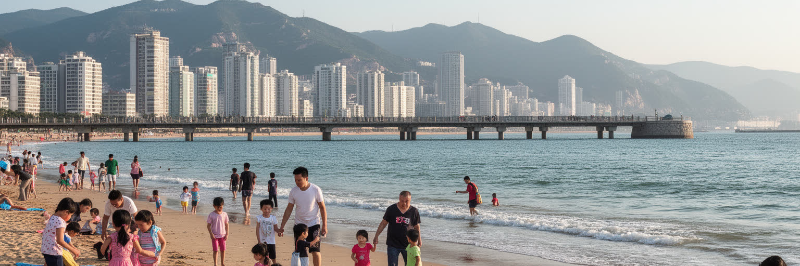
青島の観光は、旧市街の赤い屋根、桟橋、海水浴場、海辺の遊歩道、ビール文化、崂山の山岳信仰と自然を組み合わせます。中心部から海へ歩ける距離感は大きな魅力で、夏には家族連れ、学生、旅行者が浜辺に集まり、ホテル、飲食、土産物、交通が季節的に忙しくなります。オリンピックのセーリング会場の記憶も残り、海上スポーツ、海辺のランニング、写真撮影が都市の余暇を広げます。ですが、海水浴場は単なる余暇の場所ではありません。水質、砂浜の管理、救助体制、混雑、日除け、ゴミ、トイレ、更衣施設、周辺交通が観光の質を決めます。海辺の価値が上がるほど、高層住宅やホテル開発も進み、公共の海岸線がどこまで誰に開かれているかが問われます。地元住民にとって浜辺は、早朝の散歩、子どもの遊び、結婚写真、釣り、週末の休息の場所でもあります。観光客の消費だけを優先すれば、日常の海辺は使いにくくなります。青島の観光を読むには、名所の数よりも、海岸が住民と訪問者の双方にとって開かれ、清潔で安全に保たれているかを見る必要があります。繁忙期のバスや地下鉄、歩道、救急対応、価格表示が整うほど、旅行者も住民も同じ海岸を使いやすくなります。清掃員、救助員、屋台、土産物店、配車の運転手の仕事も観光の質を支えています。海辺は商品ではなく、都市が共有する生活の余白です。
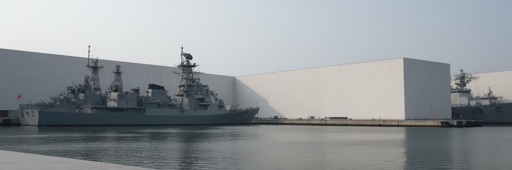
青島の近代史は、港湾と軍事の歴史から切り離せません。黄海に面した位置は、商業港としての利便性だけでなく、艦隊の拠点、防衛、列強の競争、戦争の記憶を引き寄せました。ドイツ租借地としての開発、日本による占領、中国への返還、近代海軍の存在は、都市の景観と記憶に層を作っています。軍港や関連施設は観光地のように自由に見える場所ではありませんが、都市の安全保障上の位置を示す重要な要素です。海軍博物館や記念施設、港に残る近代建築は、海をめぐる国家の力と市民の生活が近くにあることを教えます。軍事的な重要性は、道路、港湾管理、警備、土地利用、海上交通にも影響します。観光客が桟橋や浜辺を楽しむ同じ海は、国家防衛と国際関係の空間でもあります。青島を読むには、ビールや海水浴の明るい印象だけでなく、戦争、植民地支配、海軍、返還の歴史を同じ地図に置く必要があります。海は開放の象徴であると同時に、境界、監視、記憶の場所でもあります。軍事の記憶を扱う際には、国家の物語だけでなく、港で働いた人、移住した家族、戦争で生活を変えられた住民の視点も重要になります。観光の説明が明るい海辺だけを語るなら、都市の近代史は半分しか見えません。港の近くで続く日常も、その歴史を静かに受け止めています。記念施設と日常の海辺が近いことが、青島の歴史を抽象的な出来事ではなく生活に残る記憶として見せています。
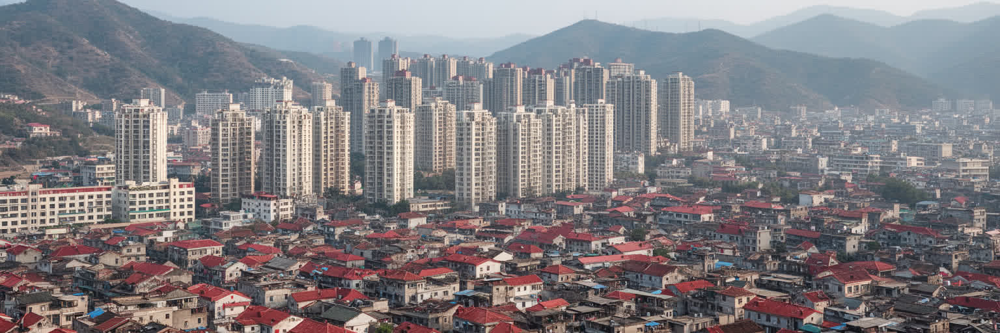
青島の都市成長は、旧市街の保存と新区の拡大を同時に進めてきました。海沿いの歴史地区には古い住宅、坂道、小さな商店が残り、東部や北部、湾岸の新区には高層マンション、オフィス、商業施設、大学、工業団地が広がります。新しい住宅は設備や交通の便利さをもたらす一方、家賃や購入価格、管理費、通勤距離をめぐる負担も生みます。旧市街では老朽住宅の改修、文化財保護、観光化、住民の転出が重なり、どこまで生活の場として残せるかが問われます。都市の見た目が整うほど、路地の食堂、修理店、近所付き合い、子どもの通学路、高齢者の休み場が失われることもあります。新区では道路が広く建物も新しいが、職場、学校、病院、買い物、公共交通が十分そろわなければ、生活は自動車や長い移動に依存します。青島の住宅を読むには、海の見えるマンションの価値だけでなく、坂道の古い家、移住労働者の住まい、若い家族のローン、高齢者の近所関係を同時に見る必要があります。都市の成長は、建物の更新だけでなく、生活のつながりをどう残すかで評価されます。観光地に近い住宅ほど短期滞在や店舗化の影響を受け、静かな生活環境を保ちにくくなります。工業地帯に近い地区では雇用への近さと環境負担が隣り合います。住む場所の選択は、収入、通勤、学校、海への距離、将来の再開発リスクを同時に考える論点です。
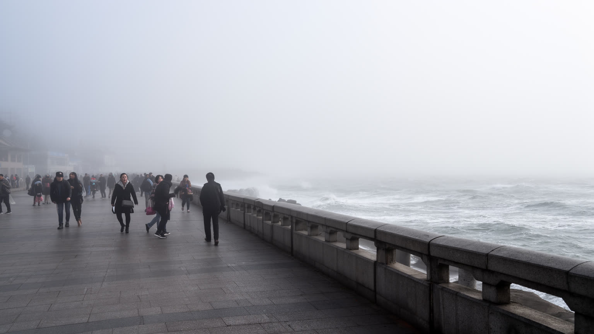
青島の気候は、海に近いことの恵みと負担を同時に持ちます。夏は内陸都市ほど極端な暑さになりにくいが、湿気、海霧、観光客の集中、冷房需要が生活を左右します。冬は乾いた北風が吹き、海沿いでは体感温度が下がります。春や初夏の霧は港、空港、道路、観光の眺望に影響し、海辺の建物には塩害や湿気への対策が必要になります。気候の問題は景観だけでなく、港湾作業、漁業、清掃、屋外観光、建設、配送、学校行事にも関わります。台風や高潮、大雨は頻度こそ南方沿海部ほどではありませんが、低地、地下空間、海岸施設、観光地の安全を試します。気候変動が進めば、海面上昇、強い雨、熱波、海洋生態系の変化が都市の計画に入り込みます。青島の環境を読むには、海風の快適さだけでなく、霧の日の物流、浜辺の水質、海岸侵食、古い住宅の断熱、港湾地区の労働安全を見る必要があります。海に開かれた都市であることは、景色を楽しむ権利だけでなく、水と風に備える責任を持つことでもあります。気候の影響は均等ではありません。屋外で働く人、古い住宅に住む高齢者、混雑した浜辺で働く警備員や清掃員ほど、暑さや風の負担を受けやすいです。観光客に見えにくい港湾の夜勤も、霧や強風で危険が増します。冬の湿った寒さは、古い住宅や坂道の移動にも影響します。気候対策は堤防や排水だけでなく、休憩場所、日陰、避難情報、住宅改修にも及びます。
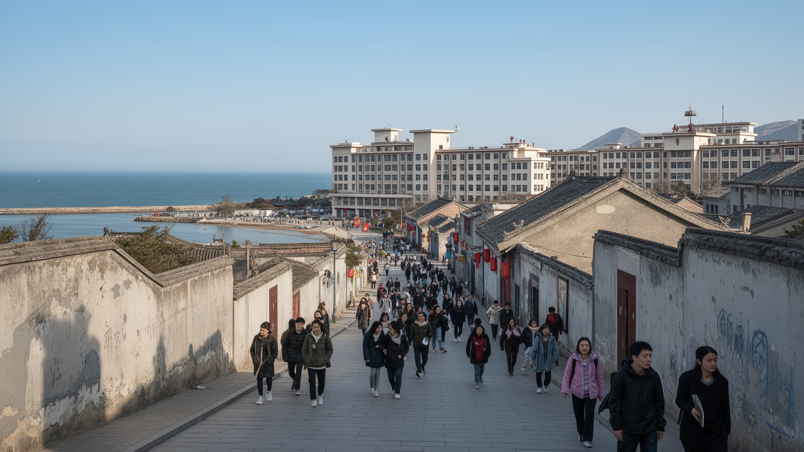
青島の文化は、旧市街の観光イメージだけでなく、大学、研究所、学生街、音楽、スポーツ、海辺の散歩、山東の家庭料理によって作られます。中国海洋大学をはじめとする教育機関は、海洋科学、工学、語学、経済、観光、文化産業の人材を集め、若い人口の流れを都市に与えます。学生は書店、カフェ、安い食堂、賃貸住宅、アルバイト、公共交通を使い、都市の消費と雇用を細かく動かします。青島海牛や青島西海岸の試合日は、サッカー観戦、屋台、地下鉄の混雑が週末のリズムを変えます。大学は研究成果だけでなく、地域の公開講座、国際交流、起業、留学生、文化イベントを通じて、青島を港湾都市以上の知的な都市にします。一方で、若者が卒業後も残るには、賃金、住宅、職場の多様さ、創作や研究を続ける場所が必要です。文化施設や祭りが観光向けに整っても、地元の若者が使える練習場、ライブ会場、図書館、低価格の食堂が不足すれば、都市の文化は薄くなります。青島の文化を読むには、教会やビール祭りだけでなく、キャンパスの研究室、学生の通学路、ショッピングモール、海辺で走る市民、地域の市場を見る必要があります。ローカルニュースや短動画は、海霧、試合、食堂、観光混雑を素早く街の話題にします。大学があることで、外から来た若者、研究者、留学生が混ざり、言語や食、休日の過ごし方も少しずつ変わります。青島の文化的な厚みは、海辺の風景と学びの場が近いことにあります。
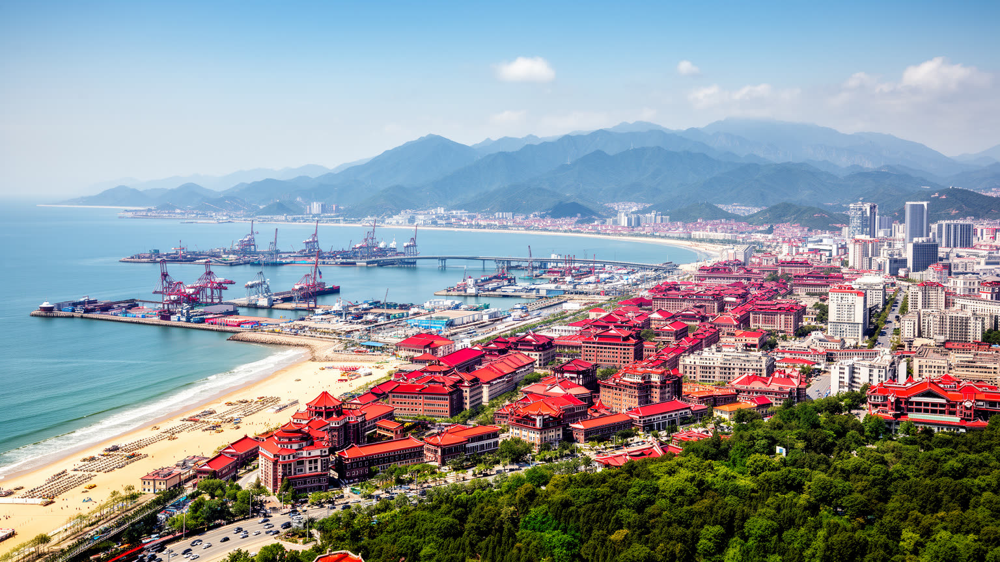
青島を世界地図の中で読む理由は、経済規模だけではありません。黄海に開く港、ドイツ租借地の記憶、ビール文化、海洋研究、家電や造船、海水浴場、崂山の信仰、坂道の住宅地が、同じ都市圏で近くに並ぶからです。旧市街を歩けば植民地支配と観光の商品化が見え、港を見れば山東省と世界市場の接続が見え、浜辺を見れば住民の余暇と公共空間の公平性が見えます。青島は上海や深圳のような巨大な金融・技術都市とは違い、港湾、海洋科学、食、観光、近代史の層が都市の個性を作ります。外から見れば赤い屋根と海辺の整った街ですが、その魅力は港湾労働、住宅更新、観光混雑、気候リスク、歴史の説明責任を伴います。都市の魅力は、矛盾が少ないことではなく、港と浜辺、研究所と市場、旧租借地と新区が互いを押し合いながら暮らしを続ける点にあります。青島を理解することは、中国沿海部の成長が、世界貿易、植民地記憶、海の環境、住民の日常をどう結び直しているかを見ることでもあります。港が速くなり、観光が拡大し、住宅が更新されるほど、誰が海に近く住めるのか、誰が混雑や環境負担を引き受けるのかが問われます。海を眺める観光客、船を整備する労働者、坂道で暮らす高齢者、試合へ向かう若者を同じ視野に入れると、都市の厚みが増します。潮の匂い、ビール祭りの音、港の機械音、霧の日の静けさまで含めて読むと、海辺の景色は世界都市の入口になります。